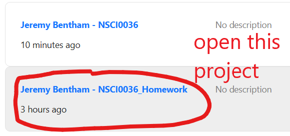
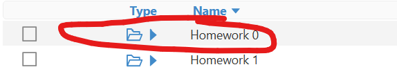
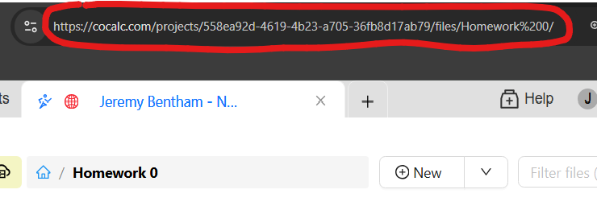

Submitting your work
Submitting your work#
In order to receive a mark and feedback for each of the five weekly homeworks you MUST complete the following TWO steps before the deadline:
Complete the homework exercises in the correct Cocalc folder
Paste the URL of the Cocalc folder into the Moodle submission box
Warning
To receive credit, it is essential that you complete assessed work in the correct location. Take care!
Follow the instructions below to practise submitting the not-for-credit ‘Homework 0’.
✓ Open the Homework Assignment
Homework 0 can be found in the Assessments section of Moodle. It consists of only 1 question.
✓ Access The Homework Project
Click on
in the top-left corner.
You should see two projects titled ‘NSCI0036’ and ‘NSCI0036_Homework’.
Click on the project ‘NSCI0036_Homework’ to open it.

✓ Open the appropriate folder
Use the  to access the appropriate folder. In this case, ‘Homework_0’
to access the appropriate folder. In this case, ‘Homework_0’

✓ Complete the homework exercise
Complete your answer to the homework in the file question_1.ipynb.
✓ Submit your work in Moodle
Make a copy of the URL to the homework folder in Cocalc

Paste the URL into the Moodle submission box for ‘Homework 0’.

Warning
to avoid a late penalty you must make the Moodle submission before the homework deadline.
✓ Check your Submission
Ask one of the course instructors to check that you have made your submission correctly.